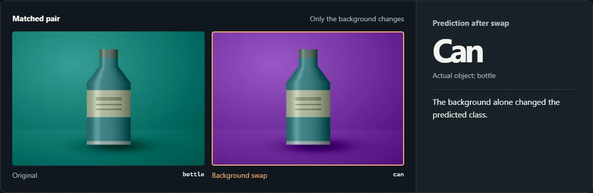

Machine learning · Model evaluation
ML Reliability Lab
I built an interactive lab to test how much we can trust an image classifier’s score.
- Split by videoKeep nearby frames from the same recording together.
- Swap the backgroundChange the background color and compare predictions for the same object.
- Review training labelsInspect flagged images and measure what changes after you correct them.

The problem
A high accuracy score can hide problems in the data. Similar frames can appear in both training and testing, a model can rely on background color, and the training labels can be wrong.
What the tests showed
With frames from the same six videos in training and testing, the model got 12 of 12 test images right. Keeping each video in one split brought that down to 8 of 12 on the same test images. In a separate test, correcting six training labels improved the score from 4 to 8 out of 12 on a fixed test set.
How I built it
The browser generates synthetic images, samples their RGB values and fits a nearest-neighbor classifier. The vision-data-audit skill uses the same checks in Codex and Claude Code. It reads the capture groups, image features and paired predictions that users supply for their own projects.
What you can try
Change the split, swap a background or approve a label correction. Each action reruns the relevant check in the browser. The demo needs no account or API key.